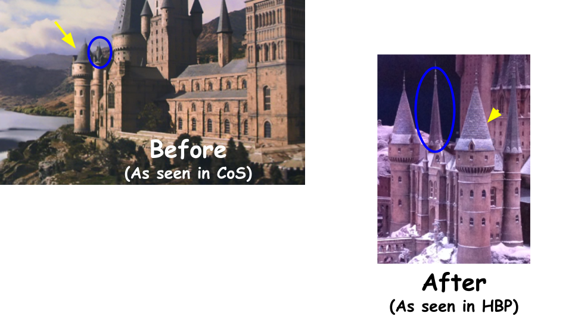
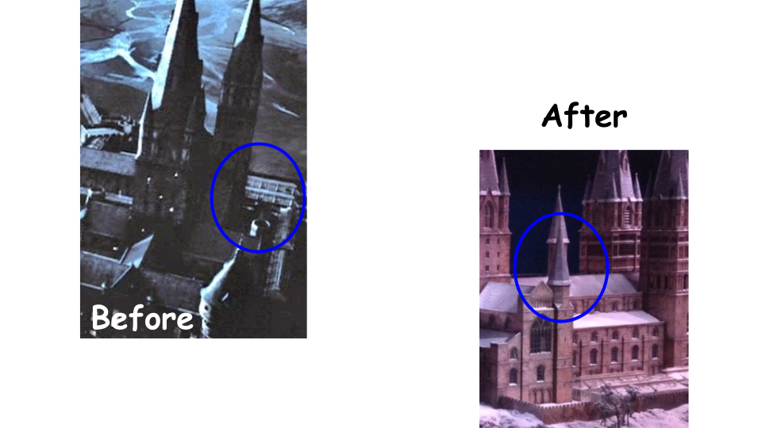
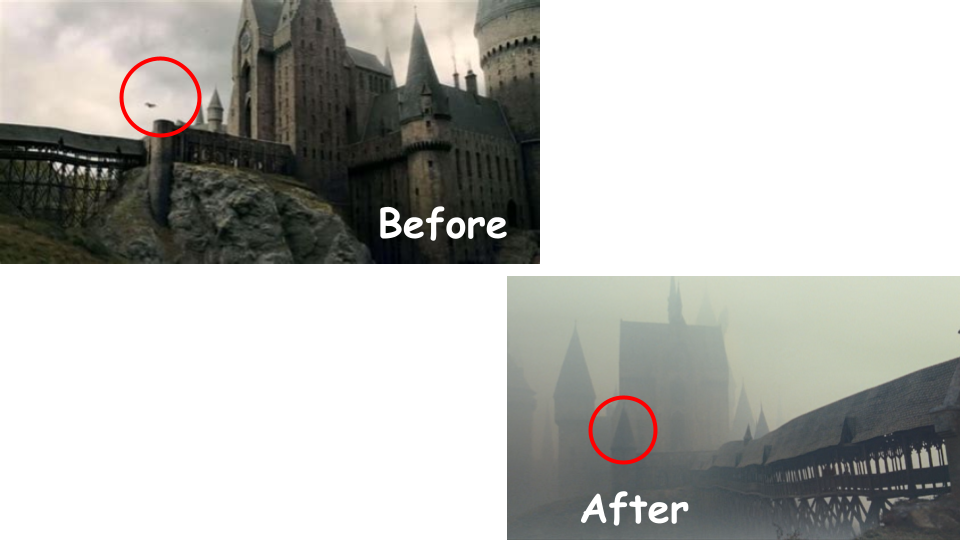
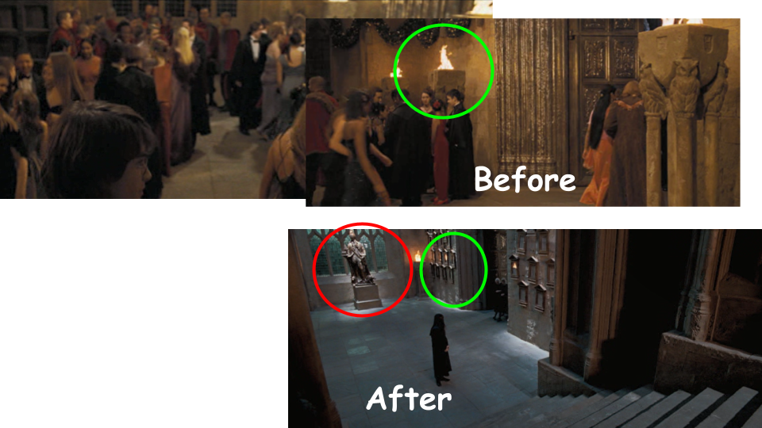
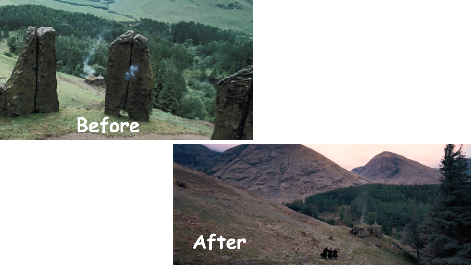
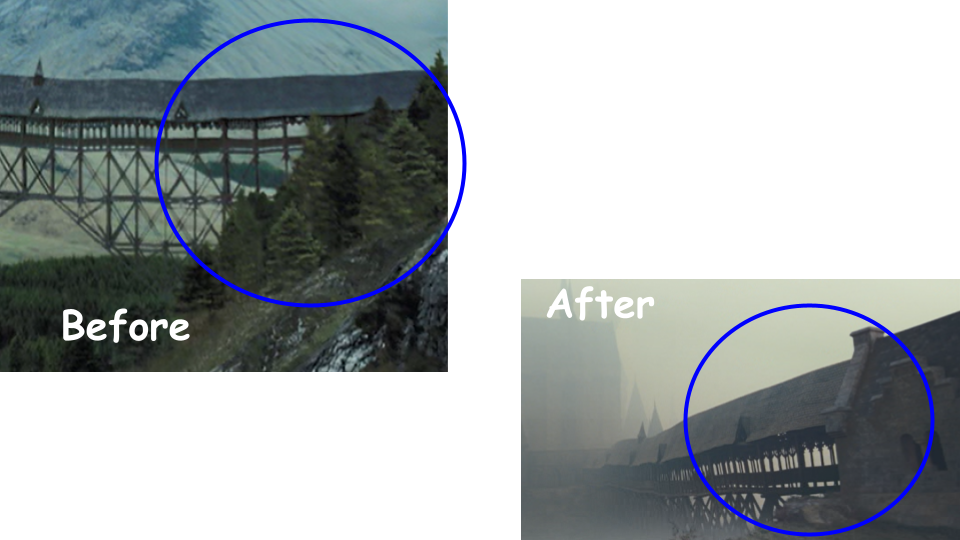
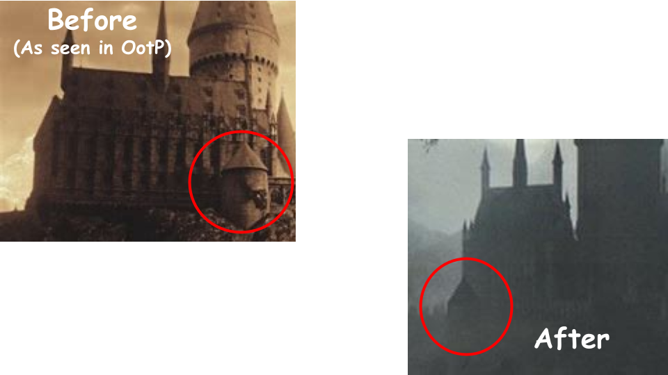

Order of the Phoenix
Harry Potter and the Order of the Phoenix has the fewest exterior changes to Hogwarts in the whole series. The changes that did occur were intended to make the castle consistent with the new stylistic updates from Prisoner of Azkaban, yet it remains very similar to the version seen in Goblet of Fire.
First, we can see both sets of towers of the Viaduct Entrance were steepened and made to be taller to be consistent with the stylistic changes of Prisoner of Azkaban. The blue circle indicates the smaller tower being changed while the yellow arrow shows the larger one.
Behind the Viaduct Entrance, new, smaller spires were added next to Central Tower on the building extending out from the Long Gallery.
Continuing with the addition of new and updated spires in this movie, another set of new spires was added to the front of the Clock Tower Courtyard. The spire on the right, not seen from this angle, appears to be a double spire.
In the Entrance Hall, the torches next to the door to the Great Hall, circled in green, were removed. In addition to this, the gold statue that was removed in Prisoner of Azkaban reappears in front of the window to the side.
For the grounds around the school, the Stone Circle near the entrance of the Wooden Bridge, added in Prisoner of Azkaban, has disappeared, leaving an open space where it used to be.
Next to where the Stone Circle used to be, the trees surrounding the entrance to the Wooden Bridge have been removed.
Finally, Hogsmeade Station was redesigned to appear more in a wooded area than out in the open. It isn't clear whether it remains in the same location as in Philosopher's Stone or if it was moved elsewhere.
